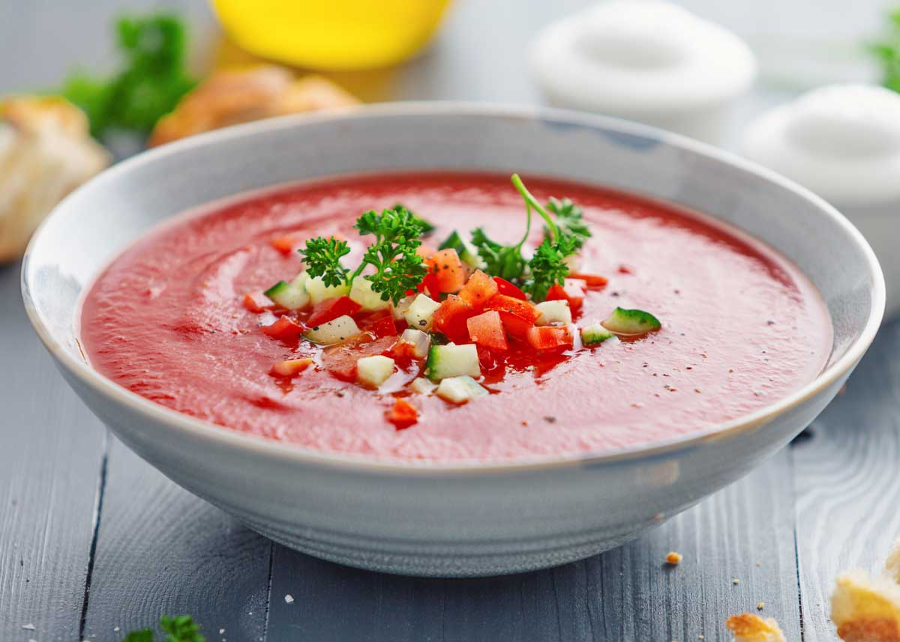
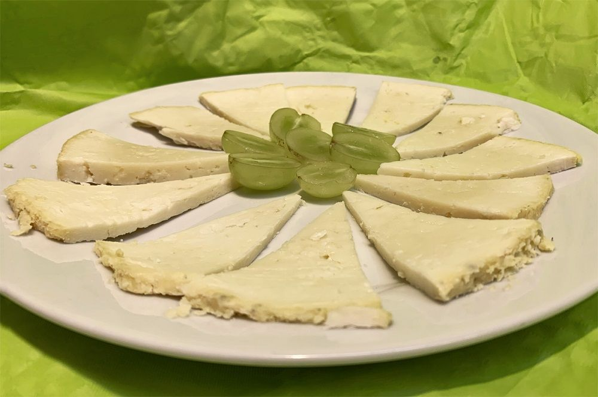
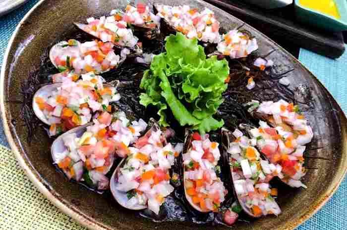

- CEVICHE
- BOQUERONES
- ARROZ CON POLLO
- PAELLA
- SOPA SECA
PLATOS QUE SERVIMOS
PLATOS PRINCIPALES:
PLATOS DE ENTRADA:

TORTILLA DE PATATAS
Una tortilla de patatas jugosa y tradicional, a veces con cebolla.

GAZPACHO
Una sopa fría de tomate y otras hortalizas, muy refrescante especialmente en verano.

JAMÓN IBÉRICO
Lonchas finas de jamón curado, una auténtica delicia.

QUESO MANCHEGO
Un queso curado hecho con leche de oveja de la región de La Mancha.
POSTRES:
CREMA CATALANA
CHURROS CON CHOCOLATE
FLAN
TARTA DE SANTIAGO
TE DEJAMOS UNA RECETA..!!
Choritos a la Chalaca
- Descripción: Deliciosos mejillones servidos en su concha, acompañados de una fresca salsa criolla.
- Ingredientes principales: Mejillones frescos, cebolla roja, tomate, maíz choclo, limón, ají limo, y cilantro.
- Origen: Plato típico de la costa peruana, conocido por su frescura y sabor vibrante.
- Sabor: Una combinación perfecta de acidez, picor y dulzura.
- Recomendación: Ideal como entrada para una comida especial o como aperitivo en reuniones.
| Item | Descripción de insumo | Unidad compra | Precio Promedio (€/.) | Factor | Unidad Costo | Cantidad | Costo (€/.) |
|---|---|---|---|---|---|---|---|
| 1 | Choros | und | 20.00 | 24 | und | 24 | 20.00 |
| 2 | Cebolla | und | 3.50 | 1.000 | und | 2 | 0.01 |
| 3 | Tomate | und | 3.50 | 1.000 | und | 2 | 0.01 |
| 4 | Limon | gr | 5.20 | 1.000 | gr | 50 | 0.26 |
| 5 | Culantro | gr | 2.50 | 1.000 | gr | 40 | 0.10 |
| 6 | Ajo | gr | 3.90 | 1.000 | gr | 5 | 0.02 |
| 7 | Apio | gr | 5.70 | 1.000 | gr | 2 | 0.01 |
| 8 | Sal | gr | 2.00 | 1.000 | gr | 10 | 0.02 |
| Costo Total | 20.70 | ||||||
